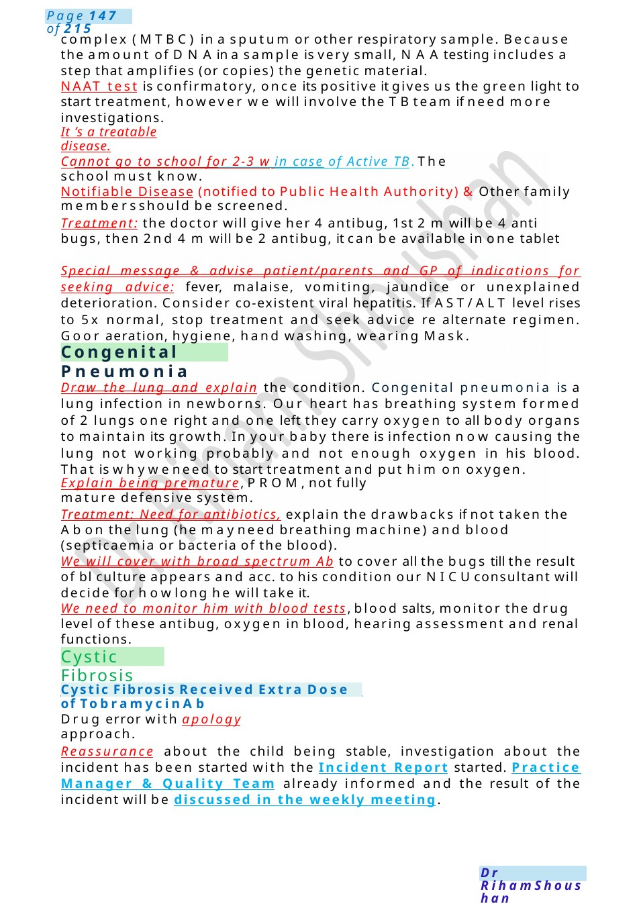
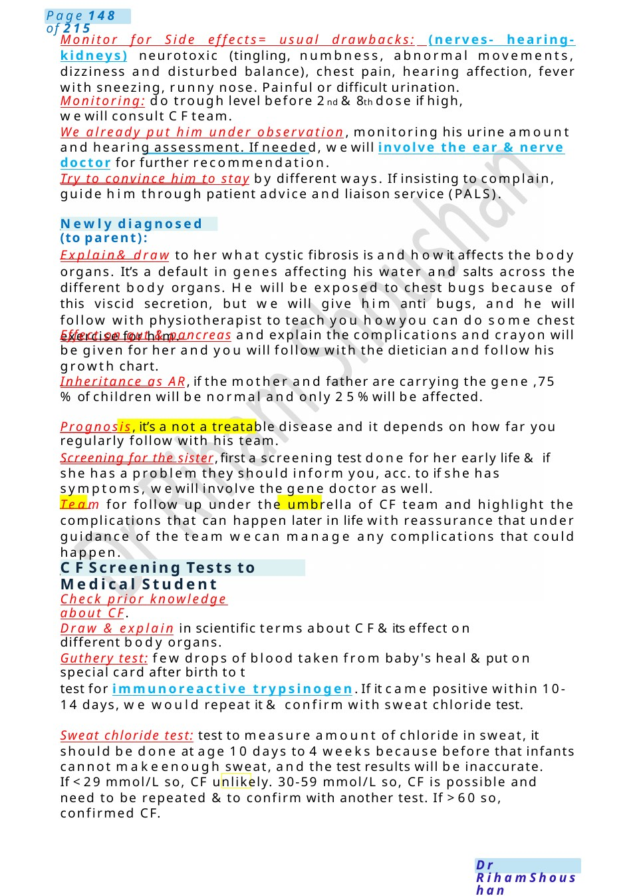
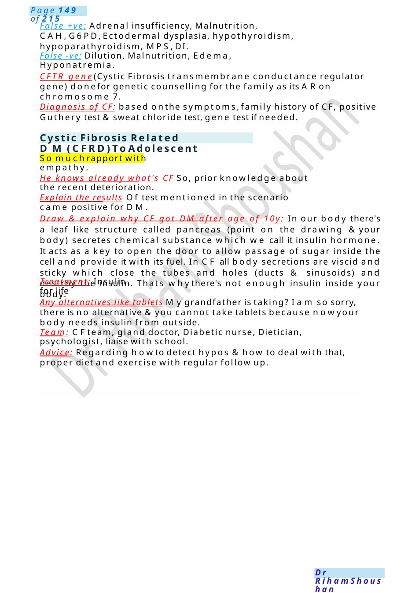
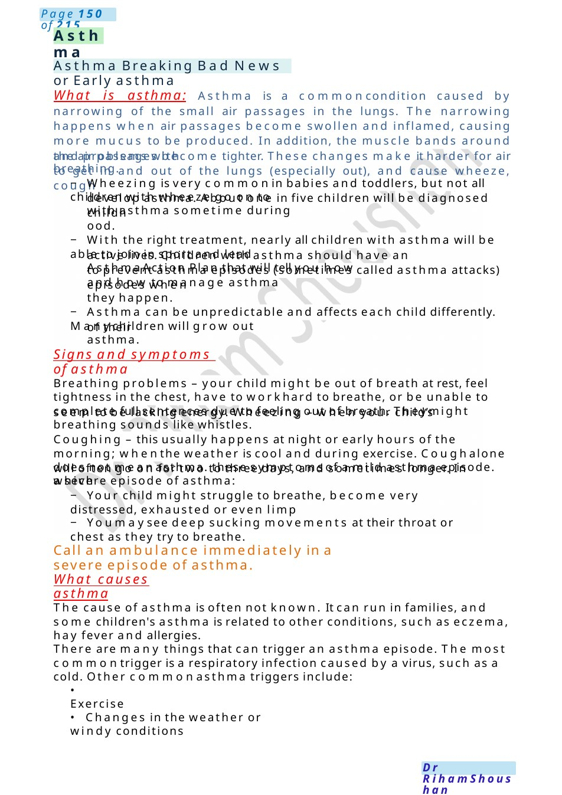

Congenital Pneumonia
complex (MTBC) in a sputum or other respiratory sample. Because the amount of DNAin a sample is very small, NAAtesting includes a step that amplifies (or copies) the genetic material. NAAT test is confirmatory, once its positive it gives us the green light to start treatment, however we will involve the TBteam if need more investigations.
Scenario Summary
complex (MTBC) in a sputum or other respiratory sample. Because the amount of DNAin a sample is very small, NAAtesting includes a step that amplifies (or copies) the genetic material. NAAT test is confirmatory, once its positive it gives us the green light to start treatment, however we will involve the TBteam if need more investigations.
Full Original Scenario

Congenital Pneumonia
Cystic Fibrosis
Cystic Fibrosis Received Extra Dose of Tobramycin Ab
complex (MTBC) in a sputum or other respiratory sample. Because the amount of DNAin a sample is very small, NAAtesting includes a step that amplifies (or copies) the genetic material.
NAAT test is confirmatory, once its positive it gives us the green light to start treatment, however we will involve the TBteam if need more investigations.
It ’s a treatable disease.
Cannot go to school for 2-3 w in case of Active TB. The school must know.
Notifiable Disease (notified to Public Health Authority) &Other family membersshould be screened.
Treatment: the doctor will give her 4 antibug, 1st 2 mwill be 4 anti bugs, then 2nd 4 mwill be 2 antibug, it can be available in one tablet
Special message & advise patient/parents and GP of indications for seeking advice: fever, malaise, vomiting, jaundice or unexplained deterioration. Consider co-existent viral hepatitis. If AST/ALT level rises to 5x normal, stop treatment and seek advice re alternate regimen. Goor aeration, hygiene, hand washing, wearing Mask.
Draw the lung and explain the condition. Congenital pneumonia is a lung infection in newborns. Our heart has breathing system formed of 2 lungs one right and one left they carry oxygen to all body organs to maintain its growth. In your baby there is infection now causing the lung not working probably and not enough oxygen in his blood. That is whyweneed to start treatment and put him on oxygen.
Explain being premature, PROM,not fully mature defensive system.
Treatment: Need for antibiotics, explain the drawbacks if not taken the Abon the lung (he mayneed breathing machine) and blood (septicaemia or bacteria of the blood).
We will cover with broad spectrum Ab to cover all the bugs till the result of bl culture appears and acc. to his condition our NICUconsultant will decide for howlong he will take it.
We need to monitor him with blood tests, blood salts, monitor the drug level of these antibug, oxygen in blood, hearing assessment and renal functions.
Drug error with apology approach.
Reassurance about the child being stable, investigation about the incident has been started with the Incident Report started. Practice Manager & Quality Team already informed and the result of the incident will be discussed in the weekly meeting.

Newly diagnosed (to parent):
CFScreening Tests to Medical Student
Monitor for Side effects= usual drawbacks: (nerves- hearing-kidneys) neurotoxic (tingling, numbness, abnormal movements, dizziness and disturbed balance), chest pain, hearing affection, fever with sneezing, runny nose. Painful or difficult urination.
Monitoring: do trough level before 2nd &8th dose if high, wewill consult CFteam.
We already put him under observation, monitoring his urine amount and hearing assessment. If needed, wewill involve the ear & nerve doctor for further recommendation.
Try to convince him to stay by different ways. If insisting to complain, guide him through patient advice and liaison service (PALS).
Explain& draw to her what cystic fibrosis is and howit affects the body organs. It’s a default in genes affecting his water and salts across the different body organs. He will be exposed to chest bugs because of this viscid secretion, but we will give him anti bugs, and he will follow with physiotherapist to teach you howyou can do some chest exercise for him.
Effect on gut & pancreas and explain the complications and crayon will be given for her and you will follow with the dietician and follow his growth chart.
Inheritance as AR, if the mother and father are carrying the gene ,75 %of children will be normal and only 25%will be affected.
Prognosis, it’s a not a treatable disease and it depends on how far you regularly follow with his team.
Screening for the sister, first a screening test done for her early life & if she has a problem they should inform you, acc. to if she has symptoms, wewill involve the gene doctor as well.
Team for follow up under the umbrella of CF team and highlight the complications that can happen later in life with reassurance that under guidance of the team wecan manage any complications that could happen.
Check prior knowledge about CF.
Draw & explain in scientific terms about CF&its effect on different body organs.
Guthery test: few drops of blood taken from baby's heal &put on special card after birth to t
test for immunoreactive trypsinogen. If it came positive within 10-14 days, we would repeat it & confirm with sweat chloride test.
Sweat chloride test: test to measure amount of chloride in sweat, it should be done at age 10 days to 4 weeks because before that infants cannot makeenough sweat, and the test results will be inaccurate.
If <29 mmol/L so, CF unlikely. 30-59 mmol/L so, CF is possible and need to be repeated & to confirm with another test. If >60 so, confirmed CF.

Cystic Fibrosis Related DM(CFRD)To Adolescent
False +ve: Adrenal insufficiency, Malnutrition, CAH,G6PD,Ectodermal dysplasia, hypothyroidism, hypoparathyroidism, MPS,DI.
False -ve: Dilution, Malnutrition, Edema, Hyponatremia.
CFTR gene(Cystic Fibrosis transmembrane conductance regulator gene) donefor genetic counselling for the family as its ARon chromosome 7.
Diagnosis of CF: based onthe symptoms,family history of CF, positive Guthery test &sweat chloride test, gene test if needed.
So muchrapport with empathy.
He knows already what's CF So, prior knowledge about the recent deterioration.
Explain the results Of test mentioned in the scenario came positive for DM.
Draw & explain why CF got DM after age of 10y: In our body there's a leaf like structure called pancreas (point on the drawing &your body) secretes chemical substance which we call it insulin hormone. It acts as a key to open the door to allow passage of sugar inside the cell and provide it with its fuel. In CF all body secretions are viscid and sticky which close the tubes and holes (ducts & sinusoids) and destroy the insulin. Thats whythere's not enough insulin inside your body.
Treatment: Insulin for life
Any alternatives like tablets Mygrandfather is taking? I am so sorry, there is no alternative &you cannot take tablets because nowyour body needs insulin from outside.
Team: CFteam, gland doctor, Diabetic nurse, Dietician, psychologist, liaise with school.
Advice: Regarding howto detect hypos &how to deal with that, proper diet and exercise with regular follow up.

Asthma
Asthma Breaking Bad News or Early asthma
will often go on for two to three days, and sometimes longer. In a severe episode of asthma:
− Your child might struggle to breathe, become very distressed, exhausted or even limp
− Youmaysee deep sucking movements at their throat or chest as they try to breathe.
seem to be lacking energy. Wheezing – when your child’s breathing sounds like whistles.
Signs and symptoms of asthma
of their asthma.
episodes when they happen.
active lives. Children with asthma should have an Asthma Action Plan that will tell you how
childhood.
develop asthma. About one in five children will be diagnosed with asthma sometime during
and problems with breathing.
What is asthma: Asthma is a commoncondition caused by narrowing of the small air passages in the lungs. The narrowing happens when air passages become swollen and inflamed, causing more mucus to be produced. In addition, the muscle bands around the air passages become tighter. These changes make it harder for air to get in and out of the lungs (especially out), and cause wheeze, cough
− Wheezing is very commonin babies and toddlers, but not all children with wheeze go on to
− With the right treatment, nearly all children with asthma will be able to join in sport and lead
to prevent asthma episodes (sometimes called asthma attacks) and how to manage asthma
− Asthma can be unpredictable and affects each child differently. Manychildren will grow out
Breathing problems – your child might be out of breath at rest, feel tightness in the chest, have to workhard to breathe, or be unable to complete full sentences due to feeling out of breath. Theymight
Coughing – this usually happens at night or early hours of the morning; whenthe weather is cool and during exercise. Coughalone does not meanasthma. these symptomsof a mild asthma episode. which
Call an ambulance immediately in a severe episode of asthma.
What causes asthma
The cause of asthma is often not known. It can run in families, and some children's asthma is related to other conditions, such as eczema, hay fever and allergies.
There are many things that can trigger an asthma episode. The most commontrigger is a respiratory infection caused by a virus, such as a cold. Other commonasthma triggers include:
- Exercise
- Changes in the weather or windy conditions